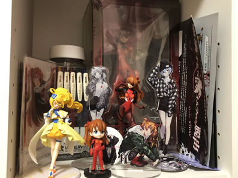
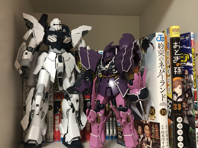

自己紹介
大妻女子大学 社会情報学部 社会情報学科 情報デザイン専攻 ２年
学籍番号 131319205 石崎 未蘭
好きな食べ物 ラーメン
趣味 ガンプラづくり、漫画を読むこと、フィギア集め
特技 シャボン玉を大きく膨らませる、鳩のものまね


プログラミング経験
1年 processing・HTML・CSS・Burkett（少し）
2年 c言語
得意な言語・なんとかできる言語
HTML・CSS